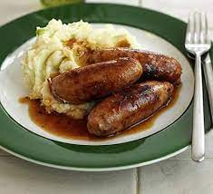

Sausage and Mash

Tasty cumberland sausages with a thick rich onion gravy and creamy mash
Super easy and tasty to boot. Add whatever veg you like to accompany this british classic!
Ingredients:
- Sausages (Cumberland or Lincolnshire) - Packet of 8
- Large Onion (diced) - 1
- Maris Pipers - 4
- OXO beef gravy granules (any brand will suffice)
- Butter - 3 Tbsp
- Milk - 100ml
- Salt and Pepper - to taste
Method:
- Start by whacking the sausages under a preheated grill as per the instructions
- Bring a large pot of water to boil
- Peel and dice Potatoes into small equal chunks and add to the boiling water
- Sprinkly a tsp of salt into the water
- Meanwhile heat a frying pan on a medium low heat and add the onions to the pan. Let them fry gently until golden brown and soft. Remove from heat and set aside.
- Once potatoes are cooked and offer no resistance to a fork drain and add back into the pan
- Mash whilst dry with a potato masher
- Add a splash of the milk and all the butter
- Beat with a wooden mixing spoon, slowly adding more milk to achieve a creamy consistency
- Make up gravy as per package instructions
- Combine onions with the gravy and into a gravy tin.
- Place a dollop of creamy mash onto the plate with two sausages right on top
- Drizzle a healthy serving of gravy over the top to serve!
HOME